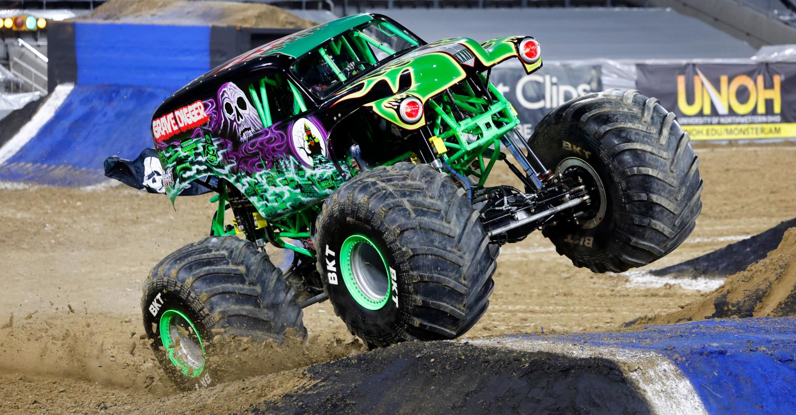

Monster Jam es un tour en vivo de deportes de motor operado por Feld Entertainment. La serie comenzó en 1992, y está autorizada bajo el paraguas de la Asociación de Hot Rod de los Estados Unidos (USHRA). Los eventos se celebran principalmente en América del Norte, con algunos eventos adicionales en otros países. Aunque los formatos de eventos individuales pueden variar mucho en función del entretenimiento "intermedio", la atracción principal es siempre las competiciones de carreras y freestyle de monster trucks.
